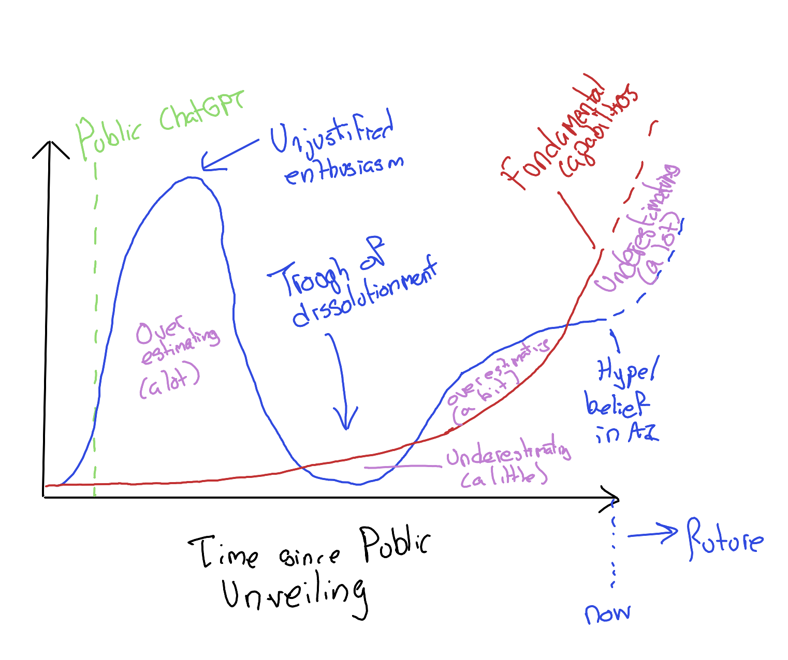

Source: Wikimedia Commons, from Harlow’s research at the University of Wisconsin-Madison.
{kind=link}
In the 1950s, a researcher called Harry Harlow decided to psychologically torture baby monkeys for science.
He took baby rhesus monkeys from their mothers, while they were still weaning, and placed them in a cage with two avatar monkeys, as shown in Figure 1.
One of the avatars was called Cloth Mother. It looked more like a monkey, and was covered in cloth, so more pleasant to hold and touch.
The other avatar was called Wire Mother. This was a bare wire cage, no soft cloth covering, but provided milk that the baby monkey needed to survive.
Put another way, Harlow’s experiments forced the baby monkeys to choose between:
- Form-without-function: Cloth Mother
- Function-without-form: Wire Mother
The key finding from this research was that the baby monkeys preferred, most of the time, to be around Cloth Mother rather than Wire Mother. Therefore, when forced to choose, they preferred form over function.
Of course, some clever baby monkeys tried to have it all (short of being reunited with their real mother):
Source: University of Chicago Press Journals (DOI: 10.1086/664982), from Harlow’s attachment research.
The last few years have seen a subtler but much broader variant of this attachment research being conducted on billions of humans (with no control arm). From late 2022 and throughout much of 2023 we were effectively offered the following Wire-Mother/Cloth-Mother choice:

Image sources: Demis Hassabis (Wikimedia Commons), Sam Altman (Getty Images via Biography.com)
{kind=link}
In an interview with the founder of TED, published 2024, Hassabis expresses surprise at how enthusiastically the general public embraced ChatGPT, despite the high prevalence of hallucination observed at the time. (Emphases added)
DH: Look, it’s a complicated topic, of course. And, first of all, I mean, there are many things to say about it. First of all, we were working on many large language models. And in fact, obviously, Google research actually invented Transformers, as you know, which was the architecture that allowed all this to be possible, five, six years ago. And so we had many large models internally. The thing was, I think what the ChatGPT moment did that changed was, and fair play to them to do that, was they demonstrated, I think somewhat surprisingly to themselves as well, that the public were ready to, you know, the general public were ready to embrace these systems and actually find value in these systems. Impressive though they are, I guess, when we’re working on these systems, mostly you’re focusing on the flaws and the things they don’t do and hallucinations and things you’re all familiar with now. We’re thinking, you know, would anyone really find that useful given that it does this and that? And we would want them to improve those things first, before putting them out. But interestingly, it turned out that even with those flaws, many tens of millions of people still find them very useful. And so that was an interesting update on maybe the convergence of products and the science that actually, all of these amazing things we’ve been doing in the lab, so to speak, are actually ready for prime time for general use, beyond the rarefied world of science. And I think that’s pretty exciting in many ways.
Meanwhile, DeepMind had been ‘naively’ focusing on its Wire Mother, AlphaFold (emphases added):
DH: So when we started this project, actually straight after AlphaGo, I thought we were ready. Once we’d cracked Go, I felt we were finally ready after, you know, almost 20 years of working on this stuff to actually tackle some scientific problems, including protein folding. And what we start with is painstakingly, over the last 40-plus years, experimental biologists have pieced together around 150,000 protein structures using very complicated, you know, X-ray crystallography techniques and other complicated experimental techniques. And the rule of thumb is that it takes one PhD student their whole PhD, so four or five years, to uncover one structure. But there are 200 million proteins known to nature. So you could just, you know, take forever to do that. And so we managed to actually fold, using AlphaFold, in one year, all those 200 million proteins known to science. So that’s a billion years of PhD time saved.
(Applause)
CA: So it’s amazing to me just how reliably it works. I mean, this shows, you know, here’s the model and you do the experiment. And sure enough, the protein turns out the same way. Times 200 million.
DH: And the more deeply you go into proteins, you just start appreciating how exquisite they are. I mean, look at how beautiful these proteins are. And each of these things do a special function in nature. And they’re almost like works of art. And it’s still astounds me today that AlphaFold can predict, the green is the ground truth, and the blue is the prediction, how well it can predict, is to within the width of an atom on average, is how accurate the prediction is, which is what is needed for biologists to use it, and for drug design and for disease understanding, which is what AlphaFold unlocks.
CA: You made a surprising decision, which was to give away the actual results of your 200 million proteins.
DH: We open-sourced AlphaFold and gave everything away on a huge database with our wonderful colleagues, the European Bioinformatics Institute.
(Applause)
CA: I mean, you’re part of Google. Was there a phone call saying, “Uh, Demis, what did you just do?”
DH: You know, I’m lucky we have very supportive, Google’s really supportive of science and understand the benefits this can bring to the world. And, you know, the argument here was that we could only ever have even scratched the surface of the potential of what we could do with this. This, you know, maybe like a millionth of what the scientific community is doing with it. There’s over a million and a half biologists around the world have used AlphaFold and its predictions. We think that’s almost every biologist in the world is making use of this now, every pharma company. So we’ll never know probably what the full impact of it all is.
And although a million and a half biologists isn’t nothing, it pales into insignificance when compared to more than one billion people who likely had exposure to ChatGPT or similar.1
And what did this differential magnitude of exposures to Cloth Mother compared with Wire Mother AIs inevitably lead to amongst the general public? Firstly a tidal wave of enthusiasm, because these LLMs at least looked like they knew how to think:
- “It can write poetry”
- “It can write emails for me”
- “It can write 500 page books I can put my name to”
- “It seems very polite and patient with me”
But then, after this initial wave of hype and enthusiasm from the general public, amazed by the ability with which the LLMs had managed to mimic the syntactical qualities of human languages, a counter-wave of disillusionment began, once people started to grasp that the underlying semantic reasoning capabilities of publicly available LLMs tended to fall far short of their linguistic fluency:
- “AIs hallucinate”
- “AIs can’t be relied on to provide accurate verifiable information”
- “AIs are sycophantic bullshit artists”
Many people, I suspect, having felt ‘tricked’ by the first generation of public LLMs, having been ‘suckered’ by the lack of semantic succour they offered, may now continue to now hold low opinions of LLM-based AIs (and many more still may consider LLMs and AIs to be synonyms), opinions that were almost certainly justifiable at the time they were formed, but that no longer correspond to their present capabilities.
Why? Because it seems that, quietly, without any specific fanfare or ‘whoosh!’ moment to point to, the underlying semantic and reasoning capabilities have continued to improve.2 Crucially, however, they seem to have improved exponentially rather than linearly.
So, we in effect have two hypothetical curves: one for public enthusiasm for AI; another for underlying capabilities of public facing AIs. When enthusiasm outpaces capabilities, we have periods of overestimating AI; and when capabilities outpace enthusiasm, we have periods of underestimating AIs.
My hunch is that these two curves look roughly as follows:

So, I suspect we are presently at much more risk of underestimating AI capabilities, than overestimating AI capabilities. And given the exponentially improving capabilities of AIs (and the human blind spot for intuiting exponential growth), we do so very much at our peril.
To return to Harlow’s experiment, it now seems - quietly but definitively - each Cloth Mother we now cling onto now also contains a Wire Mother inside.
The problem is: the succour offered by the Wire Mother may now be so nutritious, and the cloth so soft and inviting, we might find ourselves clinging to WiredClothMother, infantalised, for evermore.
Critique from Claude
When asked to critique this blog post, here is what I observed:
Strengths:
The central metaphor is genuinely compelling - mapping Harlow’s wire/cloth mother experiment onto the DeepMind/OpenAI divide is creative and illuminating. The structure works well, moving from the historical experiment through to contemporary AI development. The Hassabis interview quotes are particularly effective, especially his admission that they were “somewhat surprisingly” caught off guard by public enthusiasm for ChatGPT despite its hallucinations. The visual elements strongly support the argument - the side-by-side comparison of Hassabis and Altman as Wire Mother/Cloth Mother avatars drives the point home effectively.
Weaknesses:
The ending feels somewhat rushed - you move quickly from “we’re at risk of underestimating AI” to “we might be infantilized forever” without fully developing the implications. The conclusion’s connection to the title “WiredClothMother” works well as a conceptual synthesis, though you could explore further what it means to interact with an AI that provides both function and form simultaneously.
The statistical estimate of “more than one billion people” exposed to LLMs by mid-2024 is well-footnoted with methodology and sources, which strengthens the claim. However, the post would benefit from more concrete examples or benchmarks demonstrating the exponential capability improvements you reference. What specific tasks that GPT-3.5 failed at can GPT-4 or Claude 3.5 now handle reliably?
Questions:
Is the somewhat playful, irreverent tone in the opening (“decided to psychologically torture baby monkeys for science”) consistent with the more serious implications at the end about permanent infantilization? The contrast works in some ways but might jar for some readers. Also, you position DeepMind as Wire Mother (function without form) but then note they had LLMs internally - they chose not to release them publicly. Does this complicate the metaphor, or does it actually strengthen it by showing their focus on scientific utility over public engagement?
Footnotes
Conservative estimate: By mid-2024, 1-2 billion people worldwide had been exposed to some form of LLM technology. ChatGPT alone had approximately 200-300 million weekly active users by mid-2024 and reached 2.8 billion monthly visits by April 2024 (Exploding Topics, 2025). Adding other major LLM providers (Google’s Gemini integrated into Google services, Microsoft Copilot integrated into Bing and Office, Claude, Meta’s Llama-based products, and Chinese LLMs from Baidu and Alibaba) could easily double or triple the unique user count. Many users tried LLMs once or occasionally, expanding the “exposure” beyond active users. Additional data: ChatGPT reached 100 million monthly users by January 2023 (Reuters, 2023), demonstrating rapid widespread adoption across demographics and geographies.↩︎
Note from Claude: Key technological breakthroughs improving LLM reasoning and reducing hallucinations include: Reinforcement Learning from Human Feedback (RLHF) - training models to align outputs with human preferences and factual accuracy (Ouyang et al., 2022, “Training language models to follow instructions with human feedback”); Retrieval-Augmented Generation (RAG) - allowing models to access external knowledge bases and cite sources rather than relying solely on training data (Lewis et al., 2020, “Retrieval-Augmented Generation for Knowledge-Intensive NLP Tasks”); Chain-of-Thought (CoT) prompting - encouraging models to show their reasoning steps, reducing logical errors (Wei et al., 2022, “Chain-of-Thought Prompting Elicits Reasoning in Large Language Models”); Constitutional AI - training models to critique and revise their own outputs according to principles (Bai et al., 2022, “Constitutional AI: Harmlessness from AI Feedback”); Tool use and function calling - enabling models to use calculators, search engines, and APIs for factual queries rather than generating from memory; Mixture of Experts (MoE) architectures - allowing specialized sub-models to handle different types of queries more accurately; and extended context windows (from 4K to 200K+ tokens) - enabling models to maintain coherence and reference source material over longer conversations.↩︎